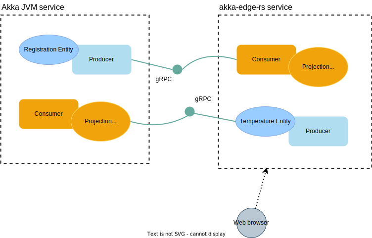

Guide - Rust
Akka Edge support has been extended to empower cloud developers to run their Akka applications even closer to where they are used, away from the cloud. We call this “Akka Edge Rust”, and it provides a subset of Akka implemented with the Rust language. Rust has been chosen given its focus on reliability and efficiency for resource-constrained devices where CPU, memory and storage is at a premium. Akka Edge Rust has been demonstrated to run on a small Linux-based MIPS32 architecture with a single 500MHz core, 128MiB of memory and 32MB of flash-based storage, and can target small Linux-based ARMv4 architectures also.
Akka Edge Rust implements concepts familiar to developers with Akka cloud-based development, and emphasizes resiliency and responsiveness. Resiliency is achieved by being able to recover in the face of an internet connection failing, and also being able to continue its local operations. Responsiveness is achieved primarily through being event-driven. As events occur at the edge, they can be pushed to the cloud, to the user, and other parts of the edge-based system.
This guide introduces Akka Edge Rust by providing a step by step explanation of how to set up and develop a Rust-based service that works with an Akka JVM, cloud-based counterpart.

In the above diagram, the Akka JVM service is responsible for registering sensors. The Akka Edge Rust service will connect to the Akka JVM service and consume registration events as they occur. The Akka Edge Rust service will also remember where it is up to and, in the case of a restart, it will re-connect and consume any new registrations from where it left off. Communication between the edge and cloud are made over gRPC. Observations for registered sensors can then be sent to the Akka Edge Rust service via UDP, as they often are in practice. The Akka Edge Rust service will use its established connection with the Akka JVM service to propagate these local observations.
There is also an event-driven user interface written in Rust that illustrates how Akka Edge Rust can share its data types and push events to the browser in near-real-time. To achieve this, we use WebAssembly and a React-like framework known as Yew.